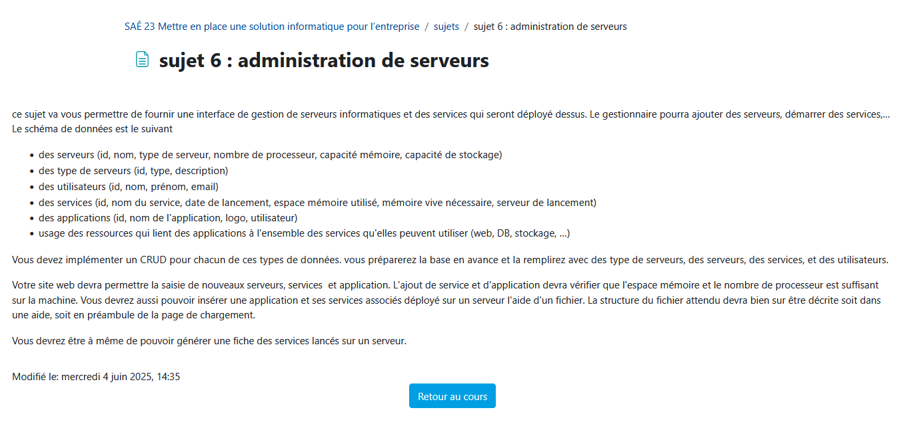

Sujet

Dans ce projet, j'ai configuré des VM pour pouvoir faire la base de données de notre site et de les stocker ainsi que l'hébergement du site avec Apache. Cette SAE m'a permis de developer la compétence du BUT RT : UE3 [Programmer] et notamment les apprentissages critiques : AC13.01 : Utiliser un système informatique et ses outils, AC13.02 | Lire, exécuter, corriger et modifier un programme, AC13.04 | Connaître l’architecture et les technologies d’un site Web.